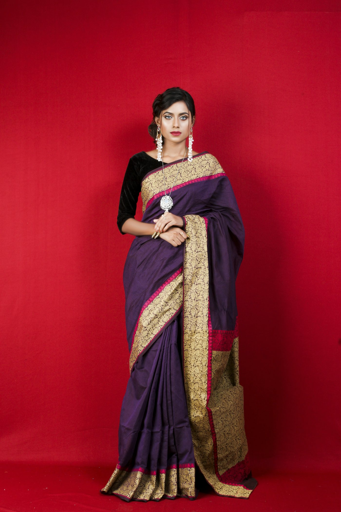

Guide · The Weaves
How to Identify a Pure Banarasi Silk Saree: A Weaver's Guide
A real Banarasi is woven by hand in Varanasi, often over several weeks. Here's how to recognise one, what the words on the label mean, and how to look after it, told the way our weavers would tell you.
What makes a saree “Banarasi”
A Banarasi saree is woven in and around Varanasi (Banaras), using techniques that have been passed down through weaving families for generations. “Banarasi brocade and saree” is protected by a Geographical Indication (GI) tag, which means the name belongs to sarees made in the Varanasi region.
The heart of it is the handloom. On a pit loom, a weaver builds each motif thread by thread. A simple saree can take around two weeks; a richly worked bridal piece can take months. That time is what you pay for, and what a powerloom copy can't reproduce.
The fabrics: Katan, Organza, Georgette, Tussar
- Katan silk is pure mulberry silk with tightly twisted threads. Heavy, lustrous and long-lasting, it is the classic bridal Banarasi.
- Organza (Kora) is sheer and crisp, often woven with small gold buttis. Light enough for long ceremonies.
- Georgette drapes softly and is easy to wear, so it suits festive days and evenings.
- Tussar is a wild silk with a natural golden sheen and an earthy texture.
- Tanchoi is woven with several coloured wefts at once, giving dense, layered patterns.
Weaving words worth knowing
- Kadwa: each motif is woven separately by hand, so the back is neat with no loose floats. It's the most prized technique.
- Fekwa / cutwork: the extra weft runs across the whole width and the loose threads at the back are cut away. Quicker, and more common.
- Meenakari: coloured silk threads set into gold motifs, like enamel on jewellery.
- Zari: the metallic thread. Traditional zari was silver wire gilded with gold; today most is “tested” zari (copper or silver-coated) or synthetic metallic yarn.
- Motifs: butti (small scattered flowers), jaal (a net covering the whole saree), bel (a creeper border), kalga (paisley), konia (corner motif) and shikargah (hunting scenes).
How to tell a pure handloom Banarasi
- Turn it over. On a handloom, especially Kadwa work, the back shows the hand: slightly irregular, with motifs woven in individually. A powerloom back looks perfectly uniform, often with long cut floats.
- Look for small irregularities. Tiny variations in the weave are the signature of a human hand, not a flaw.
- Check the pallu and border join. Handwoven pieces often show a few inches of plain silk where the weaver started or finished.
- Ask for the Silk Mark. The Silk Mark label, from the Silk Mark Organisation of India, certifies that the fabric is pure silk.
- Look for the Handloom Mark or the weaver's details, which identify a hand-woven product.
- The thread test. Pull a loose thread from the edge and burn it: pure silk smells like burnt hair and leaves a soft ash that crumbles. Synthetic fibre melts into a hard bead and smells of plastic.
- Be wary of very low prices. Weeks of skilled handwork can't be sold for the price of a machine-made saree.
Choosing the right Banarasi
- For a bride: Katan silk with Kadwa work, a jaal or shikargah pallu, in reds, wines or deep purples.
- For a wedding guest: Katan with meenakari, or Tanchoi, so it's festive without competing with the bride.
- For festivals and pujas: Katan or Tussar with a zari border.
- As a gift: Tanchoi or light Organza with small buttis, which suit every age.
Not sure? Our saree finder suggests a starting point in three taps.
Caring for a Banarasi saree
- Dry-clean only, and never wash zari work at home.
- Store it wrapped in soft muslin or cotton, never plastic, which traps moisture.
- Refold it along new lines every few months so the zari doesn't crack at the folds.
- Keep it away from perfume, deodorant and direct sunlight.
Looked after this way, a Banarasi can be handed down to the next generation.
Questions people ask
How can I tell if a Banarasi saree is handloom or powerloom?
Look at the back. A handloom, especially Kadwa work, shows individually woven motifs and small irregularities, while a powerloom back is perfectly uniform, often with long cut floats. Ask for the Silk Mark and Handloom Mark, and be cautious of very low prices.
What is the difference between Katan and Kadwa?
Katan is the fabric: pure mulberry silk with tightly twisted threads. Kadwa is a weaving technique, in which each motif is woven separately by hand. The finest bridal Banarasis are often Katan silk with Kadwa work.
How long does it take to weave a Banarasi saree?
Anywhere from about two weeks for a simpler saree to several months for a richly worked bridal piece, depending on the design and technique.
Is all zari real gold?
Most zari today is not solid gold. Traditional zari was silver wire coated in gold; today most is tested zari (copper or silver coated) or synthetic metallic thread. Ask the seller which zari is used.